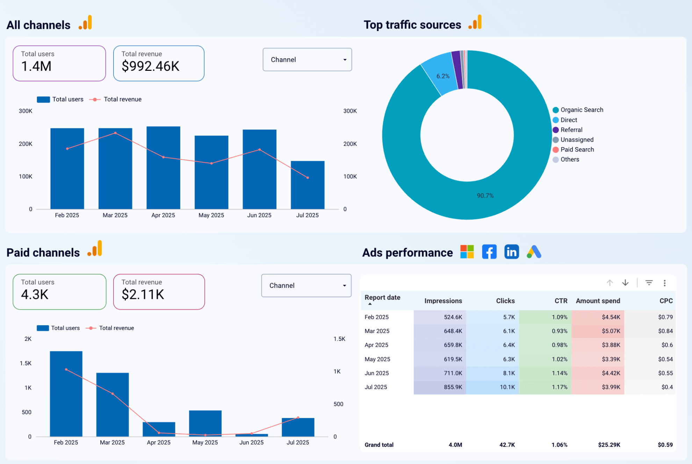

Caso 02 — Resultados
Bing · Google · Meta · LinkedIn Ads
Performance media multiplataforma
- Reto
- Optimizar la inversión repartida entre Bing, Google, Meta y LinkedIn Ads sin una lectura consolidada del rendimiento entre plataformas.
- Estrategia
- Consolidación de tráfico orgánico y pagado en un panel único, con seguimiento mensual de costo por clic, impresiones y clics por plataforma.
- Resultado
- Costo por clic reducido de $0.79 a $0.40 mientras impresiones y clics casi se duplicaron, manteniendo el CTR estable.
Todas las cifras provienen del panel de Looker Studio del proyecto, anonimizadas y sin nombre de cliente.

Panel de performance media: tráfico y pauta consolidados en Bing, Google, Meta y LinkedIn Ads.
El reto era optimizar la inversión repartida entre Bing, Google, Meta y LinkedIn Ads sin perder eficiencia al escalar: cada plataforma reporta por separado, y sin una lectura consolidada era imposible saber en tiempo real dónde rendía mejor cada peso invertido.
La solución fue un panel único que junta tráfico orgánico y pagado en la misma vista. El resultado, mes a mes: el costo por clic bajó de $0.79 a $0.40 mientras impresiones y clics casi se duplicaron (de 524.6K a 855.9K impresiones, de 5.7K a 10.1K clics), manteniendo el CTR estable alrededor de 1%. Traducido a negocio: más volumen, gastando menos por resultado.
Con esa lectura consolidada, las decisiones de presupuesto se tomaron sobre datos comparables entre plataformas —no sobre reportes aislados que no se podían cruzar— y cada peso se movió hacia donde mejor rendía.